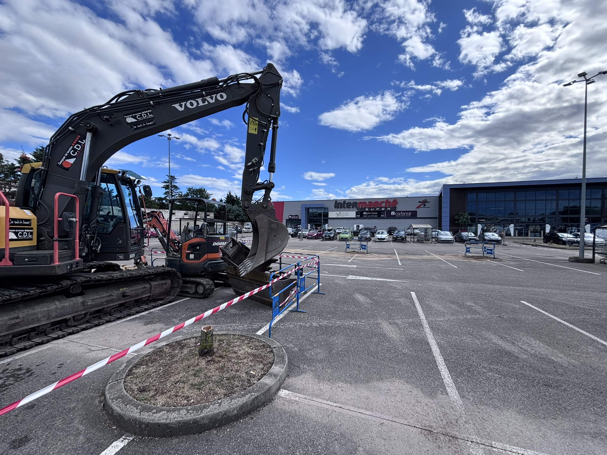
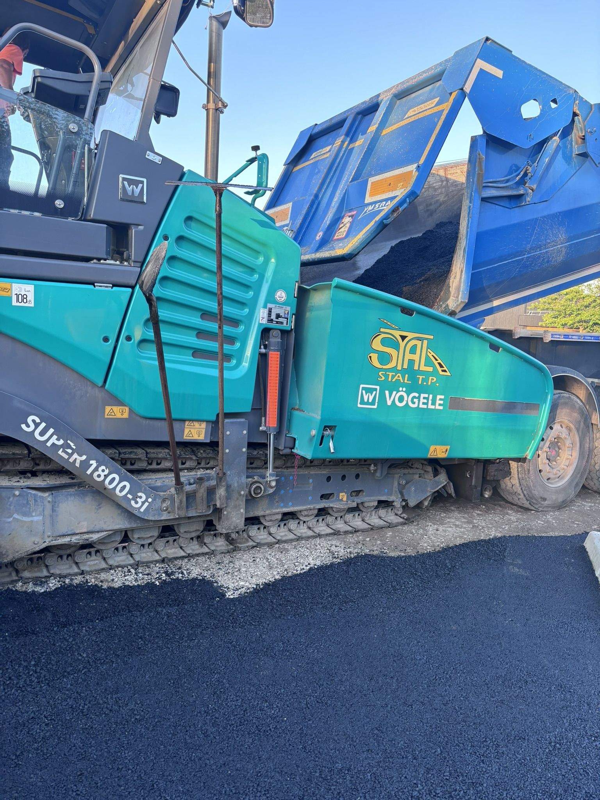
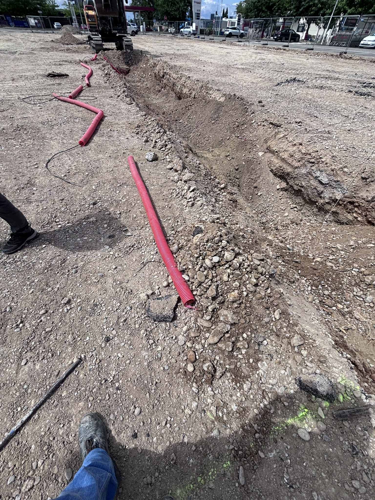

STAL TP
Quinze semaines chez un acteur des travaux publics, d'abord outil à la main puis en conduite de travaux sur un chantier de 400 000 euros.

Le poste Trois semaines d'exécution, douze de conduite
STAL TP est une entreprise de travaux publics installée à Chassieu. J'y suis entré pour un stage ouvrier de trois semaines, et j'y suis resté douze de plus côté conduite de travaux.
La première partie s'est passée outil à la main, sur le terrain, à comprendre ce qu'un compagnon peut réellement faire et ce que ça lui coûte en temps. La seconde m'a placé de l'autre côté, à piloter le chantier de l'Intermarché de Saint-Bonnet-de-Mure, d'environ 400 000 euros.
Missions en conduite de travaux Chantier Intermarché de Saint-Bonnet-de-Mure
- Suivi quotidien du chantier. Avancement, points d'arrêt, arbitrages sur le terrain et remontée d'informations à la hiérarchie.
- Coordination des équipes. Organisation des interventions, séquencement des tâches et gestion des aléas de planning.
- Gestion des devis et des sous-traitants. Consultation, comparaison des offres, suivi des commandes et vérification des prestations réalisées.
- Suivi budgétaire. Contrôle des dépenses au regard du montant du marché, environ 400 000 euros.
- Interface avec le client et les intervenants. Comptes rendus, réponses aux demandes de modification et arbitrages délai contre coût.
En images ✏️ assets/img/parcours/



Pourquoi ça compte
Un ingénieur qui n'a jamais tenu une règle de maçon dessine des détails irréalisables. Ces quinze semaines m'ont donné les deux points de vue : celui de l'exécution et celui du pilotage. Quand je modélise aujourd'hui, je sais à quoi ressemble la mise en œuvre derrière l'objet que je place dans la maquette.
Ce que j'en retiens
On m'a confié beaucoup de responsabilités, très vite. J'ai appris à décider avec des informations incomplètes, à demander de l'aide au bon moment, et à écrire les choses pour qu'elles ne se perdent pas entre deux réunions.